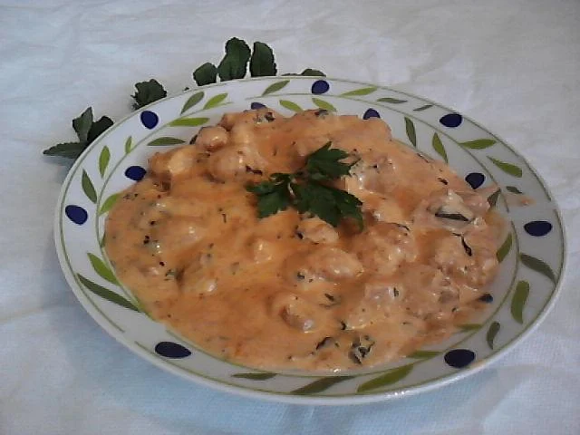
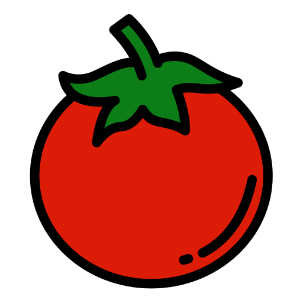

Inicio
Milho
Soja
Receitas
30 anos
Sobre mim
Strogonoff de soja

Tempo: 20min
Dificuldade: Fácil
Quantidade: 4 porção
Ingredientes
250 g de proteína de soja grande hidratada em 1 tablete de caldo de carne
2 dentes de alhos amassados
Cebola picada a gosto
Sal e temperos a gosto
Cheiro verde
 Polpa de tomate
2 colheres (sopa) de azeite
1 lata de creme de leite
2 colheres de molho de mostarda
2 colheres de molho inglês
1 xícara de cogumelos fatiados
Modo de preparo
1
Fatie a soja já hidratada, pois seu sabor fica muito forte quando os pedaços estão muito grandes.
2
Refogue a soja em óleo quente com os cogumelos, a cebola e o alho.
3
Acrescente o molho de tomate e mexa por três minutos.
4
Adicione o sal, a salsinha, os cogumelos, a mostarda e o molho inglês.
5
Mexa por mais 5 minutos.
6
Retire do fogo, adicione o creme de leite e mexa até ficar uniforme.
7
Sirva com arroz, salada e batata palha.
Avalie esta receita
Avalie
Enviar
Obrigada por avaliar!